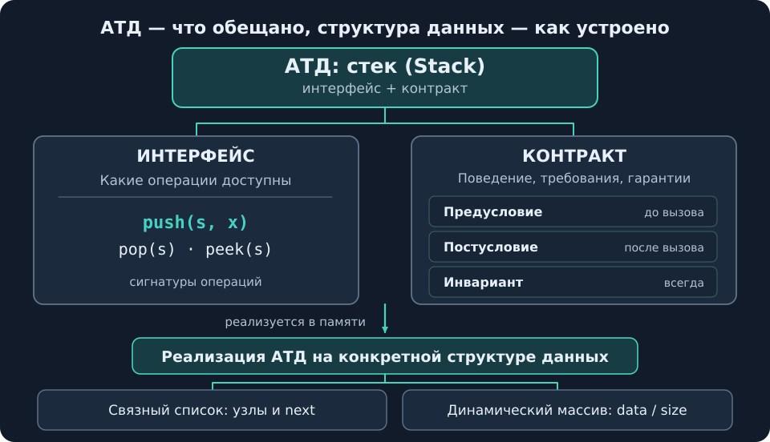
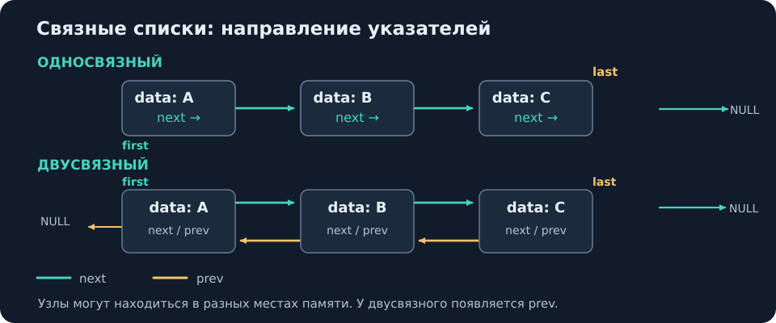
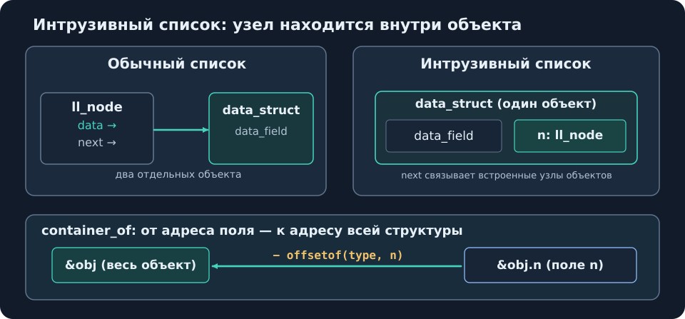
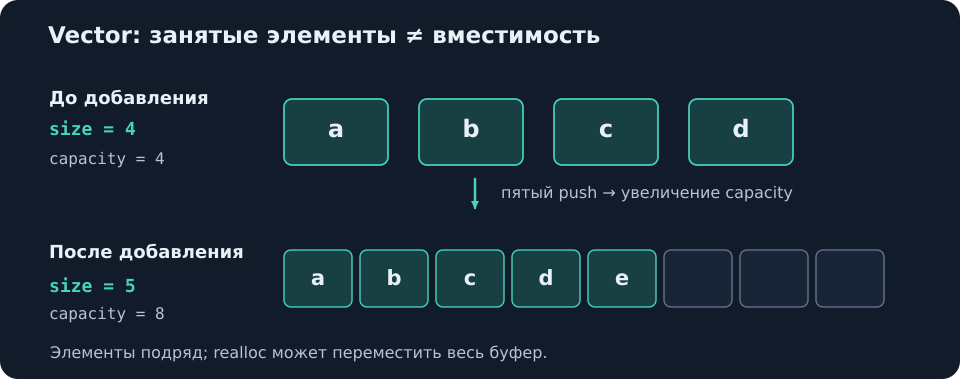
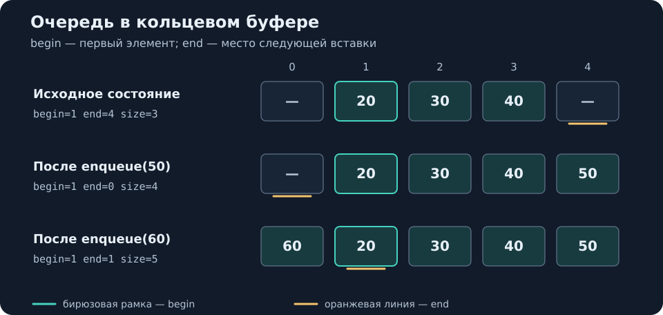

Лекция 05 — Структуры данных
Источник: В. А. Кутуев, А. И. Васенина, СПбГУ, «Структуры данных», 19.10.2026; 33 слайда (в PDF 40 страниц из-за появления элементов слайдов).\
Нумерация: в хранилище материал оформлен как лекция 05; в исходном PDF номер не указан.
Назначение: компактное повторение к летучке. Обозначения: — число элементов; — постоянное время, — линейное.
Быстрая навигация: АТД · List · Linked List · Intrusive · Vector · Stack · Queue · Map · Set · Сводка.
1. Интерфейс, контракт, АТД (слайды 2–6)
Определение — абстрактный тип данных (АТД). Тип данных, заданный набором операций и их поведением, а не устройством в памяти. АТД = интерфейс + контракт. Классические АТД: список, стек, очередь, словарь, множество.
Интерфейс — какие операции существуют. Контракт — что они делают и при каких условиях. Структура данных — конкретная реализация АТД в памяти: один АТД можно реализовать разными структурами.

Рис. 1. Иерархия: АТД состоит из интерфейса и контракта; реализация определяет устройство в памяти.
| Часть контракта | Смысл | Пример из лекции |
|---|---|---|
| Предусловие | Что должно быть верно до вызова | pop(s) требует непустой стек |
| Постусловие | Что гарантируется после вызова | push(s, x) кладёт x на вершину, увеличивает размер на 1 |
| Инвариант | Что должно быть верно всегда | Во множестве нет повторов |
Нарушение предусловия также описывается контрактом: код ошибки, NULL или неопределённое поведение (UB), как при strcpy в слишком маленький буфер. В собственном коде UB желательно избегать. АТД (абстрактный тип данных) не путать с алгебраическим типом данных: аббревиатура совпадает, понятия разные.
Зачем отделять интерфейс от хранения (слайды 2–4)
C-строки: функции string.h привязаны к представлению «массив char, заканчивающийся \0»:
char buf[32];
strcpy(buf, "Hello, "); /* а влезет? */
strcat(buf, name);
size_t len = strlen(buf); /* O(n) каждый раз */Проблемы: код по всей программе знает устройство строки; размер буфера может оказаться недостаточным; strlen каждый раз идёт до \0 за . Чтобы хранить длину отдельно, растить буфер или разрешать нулевые байты внутри строки, пришлось бы менять обращения к данным по всей программе. Нужен интерфейс, скрывающий устройство.
Скрытая реализация на практике:
FILE *f = fopen("data.txt", "r");
fgets(buf, sizeof buf, f);
fclose(f);Пользователь вызывает операции, не зная внутреннего устройства FILE. У malloc/free также бывают разные реализации; их устройство рассматривается позже в курсе.
Одного интерфейса недостаточно:
/* box.h */
struct box;
void box_put(struct box *b, int x);
int box_take(struct box *b);
/* main.c */
box_put(b, 1); box_put(b, 2); box_put(b, 3);
box_take(b); /* что вернёт? */По сигнатурам нельзя понять результат: 3 при LIFO (стек) или 1 при FIFO (очередь). Поведение определяет контракт, а не только интерфейс.
2. Список — List (слайды 7–9)
Список — АТД упорядоченной последовательности. Возможные операции: добавить / удалить / получить / изменить элемент (в начале, в конце, по индексу); узнать число элементов; обойти элементы (foreach). Обход не обязателен для любого минимального интерфейса списка. Дополнительные возможные операции: обратный обход, проверка пустоты, поиск по значению.
Контракт списка
Пусть size(l) = n.
| Операция | Предусловие | Постусловие / действие |
|---|---|---|
get(l, i) | 0 <= i < n | Получить элемент по индексу |
set(l, i, x) | 0 <= i < n | get(l, i) == x; остальные элементы не изменились |
insert(l, i, x) | 0 <= i <= n | get(l, i) == x; правые элементы сдвинуты на 1, размер +1 |
remove(l, i) | 0 <= i < n | Правые элементы сдвинуты влево на 1, размер −1 |
insert(l, size(l), x) допустим — вставка в конец. get/set/remove по индексу size(l) недопустимы. Обход — в порядке индексов 0, 1, …, size(l)−1. Инвариант: порядок элементов меняется только через insert и remove.
Интерфейс списка в C — исходный пример
struct list; /* реализация скрыта */
struct list *list_new(void);
void list_free(struct list *l);
int list_push_back(struct list *l, void *item);
void *list_pop_front(struct list *l);
size_t list_size(const struct list *l);struct list;скрывает поля; реализацию можно заменить без изменения пользовательского кода.list_push_backвозвращает-1при ошибке (например, не хватило памяти приmalloc), а не молча пропускает добавление.list_pop_frontвозвращаетNULLпри пустом списке; на слайде также упомянут вариант с выходным (out) параметром.- Владение памятью:
list_freeосвобождает узлы списка, но не сами объекты поitem— ими распоряжается вызывающий код. Это важно при совместном использовании объектов несколькими списками.
3. Связные списки (слайды 10–15)
Определение — узел (
ll_node). Отдельная запись списка с данными (data) и указателем на следующий узел (next). ПоследнийnextобычноNULL(редко используют циклические ссылки). Узлы не обязаны находиться подряд в памяти.
struct ll_node {
void *data;
struct ll_node *next;
};data имеет тип void *, чтобы список мог хранить указатели на данные разных типов. Поиск по индексу — , поскольку нужно идти по цепочке next.

Рис. 2. Связный список:
first, last, направление next и дополнительное prev.
От указателя на голову к структуре списка (слайды 11–12)
Изначально список можно представить указателем на первый узел. Отдельная управляющая структура позволяет хранить метаданные и не путать тип «весь список» с типом «узел»:
struct linked_list {
struct ll_node *first;
size_t size;
};first — первый узел, size — число узлов (узнать размер теперь ). При вставке в начало важно сначала связать новый узел со старой головой и затем обновить first; различение типов списка и узла уменьшает риск начать обход не с первого элемента.
Указатель на конец и двусвязность (слайды 13–15)
Односвязный список с last:
struct linked_list {
struct ll_node *first;
struct ll_node *last;
size_t size;
};last позволяет добавить в конец и получить последний элемент за ; его надо поддерживать при вставках и удалениях. Но для удаления последнего нужно найти предпоследний узел — по-прежнему .
Двусвязный список: к узлу добавляется struct ll_node *prev;, а контейнер хранит first, last, size. Теперь last->prev — предпоследний узел, так что удаление последнего — . При этом поиск по значению, доступ по индексу к середине и вставка/удаление в середине без готового указателя на узел всё ещё требуют обхода (всего списка или его части).
Отдельная сводка временных сложностей для всех реализаций списка — в разделе 5 (таблица со слайда 20).
4. Интрузивный список (слайды 16–17)
Обычный список: узел отдельно от данных и содержит data → объект, next → следующий узел. Интрузивный список: узел встроен в сам объект, а next связывает встроенные узлы объектов.
struct ll_node {
struct ll_node *next;
};
struct data_struct {
int data_field;
... /* другие поля; на слайде обозначены многоточием */
struct ll_node n;
};Зачем: отсутствует отдельный указатель data; если в объекте небольшие данные (например, int), одна аллокация объекта с узлом вместо двух отдельных. Для участия объекта в нескольких списках добавляют несколько полей ll_node, по одному на список. Пример применения из лекции — ядро Linux.

Рис. 3. Узел как поле объекта;
container_of возвращает адрес всего объекта по адресу вложенного поля.
offsetof и container_of: от узла обратно к объекту
Код со слайда 17:
#include <stddef.h>
#define container_of(ptr, type, member) \
((type *)((char *)(ptr) - offsetof(type, member)))
struct ll_node *node = ...;
struct data_struct *d =
container_of(node, struct data_struct, n);offsetof(type, member)из<stddef.h>— смещение поля в байтах от начала структуры.(char *)ptr— арифметика указателя по байтам (sizeof(char) == 1).- Адрес объекта = адрес встроенного поля − смещение поля; финальное
(type *)даёт указатель на всю структуру. - Макрос не выделяет и не копирует память: лишь вычисляет адрес. В лекции такой подход связывается с
list_headв ядре Linux.
5. Динамический массив — Vector (слайды 18–21)
Array List / vector — реализация списка на непрерывном массиве. Элементы подряд в памяти; доступ по индексу — .
struct vector {
void *data;
size_t elem_size;
size_t size;
size_t capacity;
};| Поле | Значение |
|---|---|
data | Начало памяти с элементами |
elem_size | Размер одного элемента в байтах |
size | Сколько элементов реально лежит |
capacity | Сколько поместится без нового выделения памяти |
size <= capacity. Адрес элемента с индексом i вычисляется с помощью смещения i * elem_size байт от data (для побайтовой арифметики можно использовать char *). Строка с отдельно хранимой длиной ( для length) и растущим буфером — vector из char; в лекции приведены C++ std::string и SDS в Redis.

Рис. 4.
size — занято, capacity — выделено; при заполнении вместимость увеличивается.
vector_push: полный код со слайда 19
int vector_push(struct vector *v, const void *x)
{
size_t es = v->elem_size;
if (v->size == v->capacity) {
size_t cap = v->capacity * 2;
if (cap == 0)
cap = 4;
void *p = realloc(v->data, cap * es);
if (p == NULL)
return -1;
v->data = p;
v->capacity = cap;
}
char *dst = (char *)v->data + v->size * es;
memcpy(dst, x, es);
v->size++;
return 0;
}Чтение кода: если size == capacity, удвоить вместимость (с нуля начать с 4); realloc запросит cap * es байт; при NULL вернуть -1 (старый буфер и size сохраняются). Затем вычислить адрес следующей ячейки как (char *)data + size * elem_size, скопировать туда elem_size байт через memcpy, увеличить size.
Важные следствия из лекции:
reallocможет переместить буфер: сохранённые внешние указатели на его элементы после успешного перевыделения недействительны.- Вместимость растёт в 2 раза: для добавлений в сумме копирований, значит амортизированно на добавление. При росте на фиксированное число элементов было бы на добавление (амортизированно).
- В CPython
listувеличивает вместимость примерно на 12,5% (упоминаютсяnewsize + newsize/8и округление до кратного 4), а не обязательно вдвое; амортизированная сохраняется. - Массив благодаря локальности памяти лучше использует процессорный кеш; иногда быстрее связного списка даже при менее выгодной асимптотике. Для улучшения локальности списков упомянуты пулы памяти (
memory pool).
Таблица временных сложностей — слайд 20
| Операция | Односвязный | Двусвязный | Array List |
|---|---|---|---|
| Доступ по индексу | |||
| Вставка в начало | |||
| Вставка в конец | , если есть last | аморт. | |
| Удаление первого | |||
| Удаление последнего | |||
| Вставка/удаление по узлу | после prev | ||
| Число элементов | , если есть size |
Реальные реализации из лекции: связные списки — GList, BSD sys/queue.h (LIST_*), Linux kernel list, Entry в SPDK. Динамические массивы — C++ vector, Python list. Выбор реализации зависит от преобладающих операций.
6. Стек — Stack (слайды 22–25)
Определение — стек: АТД с дисциплиной LIFO (Last In, First Out): последний добавленный элемент извлекается первым.
| Операция | Контракт |
|---|---|
push(s, x) | x становится вершиной; размер +1 |
pop(s) | Требует непустой стек; возвращает и удаляет вершину; размер −1 |
peek(s) | Требует непустой стек; возвращает вершину без изменения стека |
Ключевое свойство: push(s, x); pop(s) возвращает x и восстанавливает прежнее состояние. Если сделать peek(s), следующий pop(s) вернёт тот же элемент. Получение size обсуждается как возможная операция; обход всех элементов спорен для LIFO-семантики и часто отсутствует.
Стек на односвязном списке (слайд 24):
struct ll_node {
void *data;
struct ll_node *next;
};
struct stack {
struct ll_node *top;
size_t size;
};Вершина — первый узел (top); push — вставить в начало, pop — удалить из начала: , поле last и связь prev не нужны. На исходной схеме последовательно положены a, b, c, поэтому сверху c → b → a. Поле size даёт подсчёт за и проверку непустоты; в лекции упомянуты реализации без size, в частности среди конкурентных структур, где поддерживать его согласованность сложнее.
Стек на массиве (слайд 25): push и pop работают с концом массива, без сдвигов; при заполнении обычно делают realloc, сохраняя контракт. На слайде также показана схема кольцевого перехода (top + 1) % capacity (ячейки 0…5, пример значений 7, 8, 3, 4, 5, 6). Перезапись старых значений при переполнении теряет данные и нарушает обычный контракт стека — это не каноническая реализация. Для разграничения состояний «пуст» и «полон» в такой схеме нужен size.
7. Очередь — Queue (слайды 26–27)
Определение — очередь: АТД с дисциплиной FIFO (First In, First Out): первым добавлен — первым извлечён. Аналогия из лекции — живая очередь и электронная очередь с талончиками: контракт общий, реализации различны.
| Операция | Контракт |
|---|---|
enqueue(q, x) | Добавить x в конец, размер +1 |
dequeue(q) | Требует непустую очередь; вернуть и удалить первый элемент, размер −1 |
front(q) | Требует непустую очередь; вернуть первый элемент без изменения очереди |
Пример слайда: enqueue(q, 1); enqueue(q, 2); — последовательные dequeue возвращают сначала 1, затем 2. Операции получения числа элементов и обхода рассматриваются как возможные дополнительные.
Реализации, приведённые в лекции: двусвязный список с first/last и массив с begin/end/size — кольцевой буфер. Указатель begin — позиция первого элемента, end — позиция следующей вставки. При dequeue перемещается begin, при enqueue используется и перемещается end; когда достигается граница массива, позиция возвращается к началу. Это позволяет использовать освободившиеся слева ячейки, не сдвигая остальные элементы. size отличает пустой буфер от заполненного.

Рис. 5. Кольцевой буфер: после достижения конца физического массива вставка продолжается с индекса 0; порядок очереди задаёт
begin.
Дек (double-ended queue, слайд 26): очередь, в которую можно добавлять с двух концов; в лекции канонической реализацией назван двусвязный список, обеспечивающий все четыре операции с концами за .
❓ Спорный фрагмент источника (комментарий к слайду 26): «односвязный список не подходит [для очереди]: после
dequeueнужно сдвинуть указатель на первого, а предшествующего узла нет». Формулировка сохранена как вопрос к лекции: это объяснение не согласуется с уже описанным удалением первого узла односвязного списка. Не использовать данный тезис как доказанный факт.
8. Словарь — Dictionary / Map (слайды 28–30)
Определение — ассоциативный массив (Dictionary / Map). АТД для хранения пар ключ → значение. Ключи уникальны, значения могут совпадать. В разных языках:
dict/dictionary (Python),map(C++, Java), dictionary (C#).
Возможные операции: добавить значение по ключу, проверить наличие ключа, получить / удалить значение по ключу, узнать число записей, обойти пары. Отсутствие ключа при чтении/удалении — отдельный вопрос контракта.
| Операция | Контракт |
|---|---|
put(m, k, v) | После вызова get(m, k) == v. Ключ был — значение перезаписано, размер прежний; ключа не было — размер +1 |
get(m, k) | Требует contains(m, k) или явно сообщает об отсутствии; способ описывается контрактом (ошибка, NULL, сообщение «нет») |
remove(m, k) | После вызова contains(m, k) ложно, остальные пары не меняются |
| Инвариант | Каждый ключ встречается не больше одного раза |
Порядок обхода базовый контракт не гарантирует. Он может зависеть от реализации; отдельная реализация может давать дополнительные гарантии.
Реализации (слайд 30):
| Реализация | Хранение | Порядок обхода |
|---|---|---|
| HashMap | Бакеты хеш-таблицы | Данные неупорядочены, порядок не гарантирован |
| TreeMap | Узлы дерева поиска: бинарного, AVL или красно-чёрного | Можно обходить по порядку ключей |
Также упомянуты префиксные деревья (trie), без разбора. Подробная реализация словарей отнесена к будущим занятиям по хешированию и деревьям поиска.
9. Множество — Set (слайды 31–33)
Определение — множество (Set). АТД для хранения различных элементов, без значений по отдельным ключам. Элемент можно рассматривать как ключ.
Операции: добавить элемент, проверить contains, удалить, узнать размер, обойти все элементы.
| Операция / свойство | Контракт |
|---|---|
add(s, x) | После вызова contains(s, x) истинно. Если x уже был, ничего не меняется |
remove(s, x) | После вызова contains(s, x) ложно. Если x не было, ничего не меняется |
| Инвариант | Нет повторов; размер равен числу различных элементов, а не числу вызовов add |
| Обход | Базовый контракт не гарантирует порядок |
Реализации (слайд 33): HashSet можно воспринимать как HashMap, где ключ и значение совпадают; TreeSet — аналогично TreeMap. В HashSet элементы неупорядочены, TreeSet даёт порядок по ключам. В лекции это объясняется как словарь без хранения отдельных значений.
10. Сводка для летучки
| Что сравнить | Главное различие |
|---|---|
| АТД ↔ структура данных | АТД — операции + поведение; структура — конкретное хранение |
| Интерфейс ↔ контракт | Что можно вызвать ↔ как должно работать |
| Пред- / постусловие / инвариант | До вызова / после вызова / во всех допустимых состояниях |
| Односвязный ↔ двусвязный | Только next ↔ next + prev; удаление последнего ↔ при last |
| Список ↔ Array List | АТД ↔ его реализация на динамическом массиве |
size ↔ capacity | Занятые места ↔ выделенная вместимость |
offsetof ↔ container_of | Смещение поля в байтах ↔ адрес содержащей структуры по адресу поля |
| Стек ↔ очередь | LIFO (с вершины) ↔ FIFO (с начала) |
| Map ↔ Set | Пары ключ → значение ↔ только уникальные элементы |
| Hash ↔ Tree | Хеш-таблица, порядок не гарантирован ↔ дерево поиска, упорядоченный обход |
Легко перепутать: insert(l, n, x) допустим, set(l, n, x) — нет; peek/front не удаляют, pop/dequeue удаляют; realloc может переместить массив; list_free не освобождает item; повторные put по ключу и add в Set не увеличивают размер; begin == end без size не позволяет отличить пустой кольцевой буфер от полного.